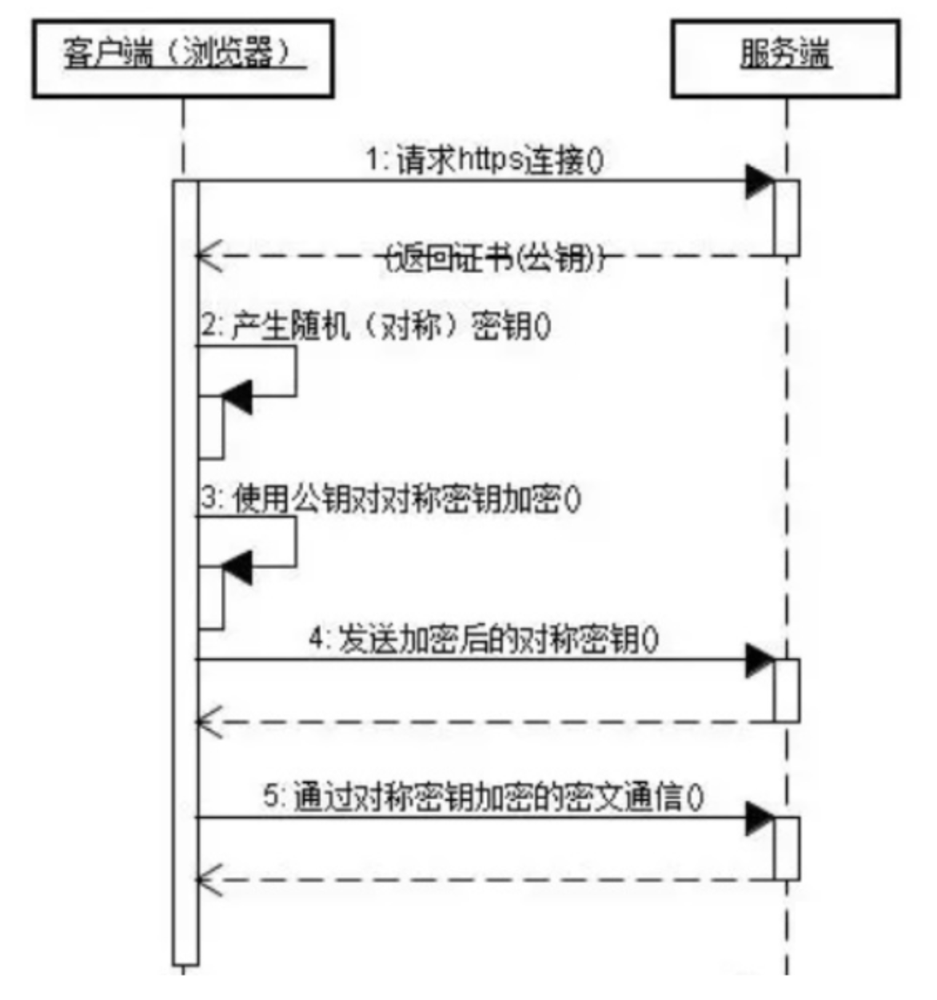
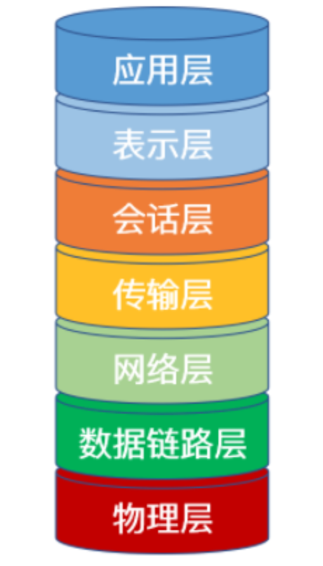
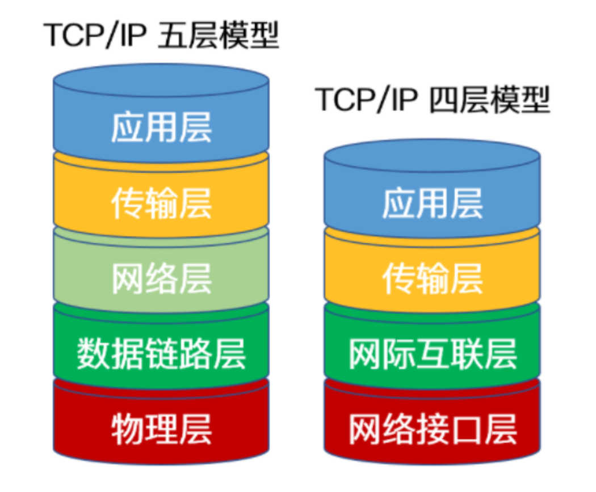
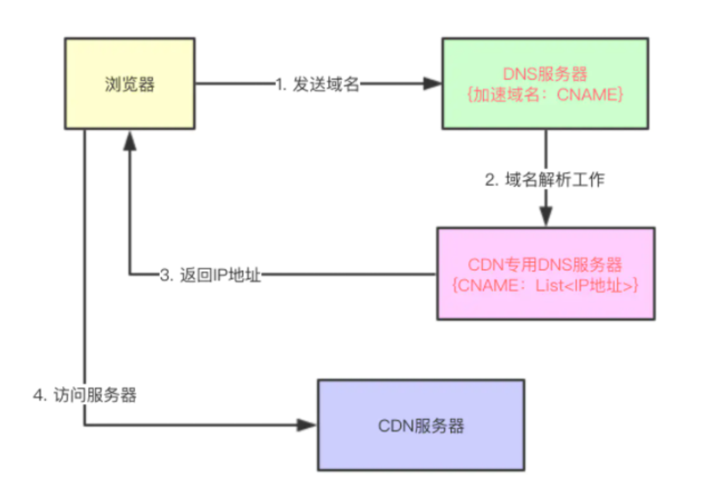
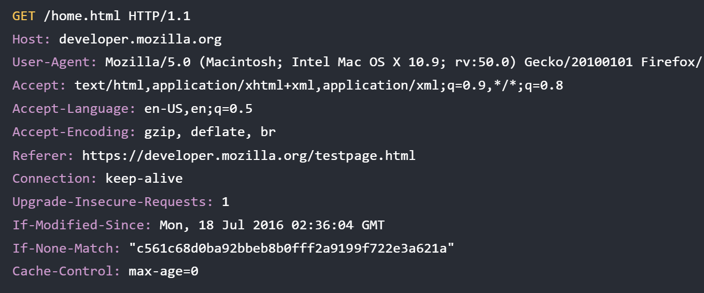
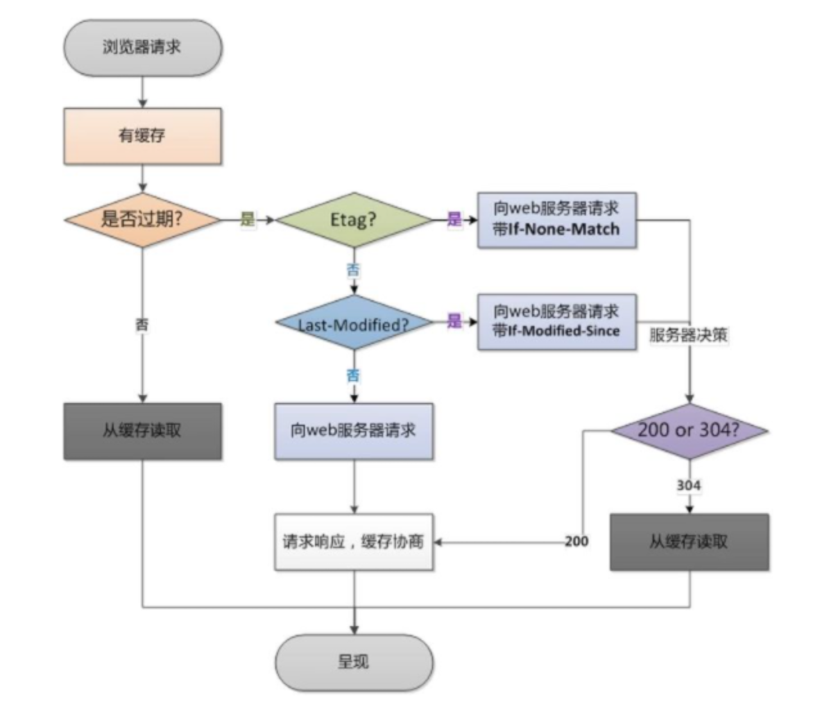
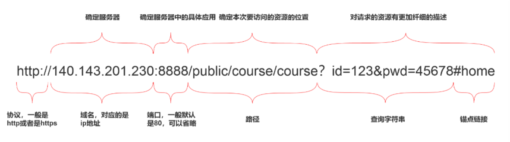
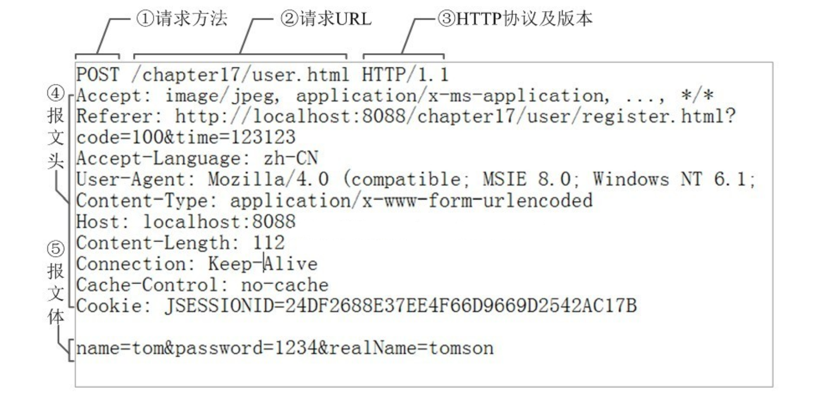
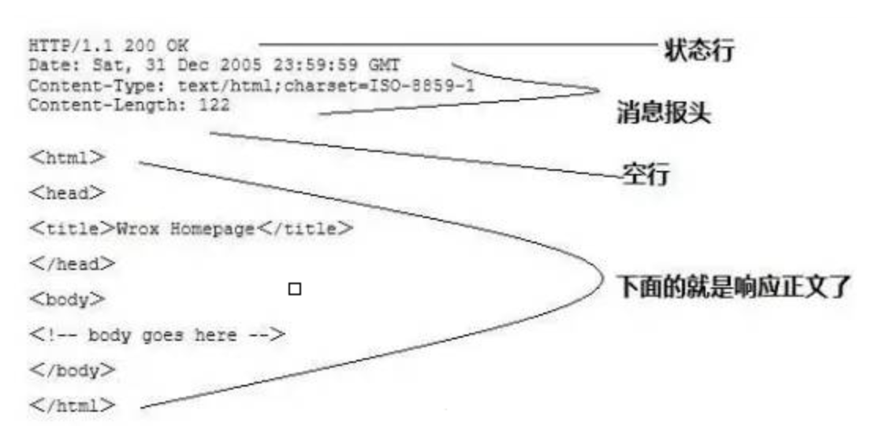

HTTP
什么是HTTP？
HTTP (HyperText Transfer Protocol)，即超文本传输协议，是实现网络通信的一种规范。HTTP传输的数据并不是计算机底层中的二进制包，而是完整的、有意义的数据，如HTML 文件, 图片文件, 查询结果等超文本，能够被上层应用识别。HTTP常被用于在Web浏览器和网站服务器之间传递信息，以明文方式发送内容，不提供任何方式的数据加密。
特点：
- 支持客户/服务器模式
- 简单快速：客户向服务器请求服务时，只需传送请求方法和路径。由于HTTP协议简单，使得HTTP服务器的程序规模小，因而通信速度很快
- 灵活：HTTP允许传输任意类型的数据对象。正在传输的类型由Content-Type加以标记
- 无连接：无连接的含义是限制每次连接只处理一个请求。服务器处理完客户的请求，并收到客户的应答后，即断开连接。采用这种方式可以节省传输时间
- 无状态：HTTP协议无法根据之前的状态进行本次的请求处理
HTTPS
HTTP传递信息是以明文的形式发送内容，不安全。而HTTPS出现正是为了解决HTTP不安全的特性。
为了保证这些隐私数据能加密传输，HTTPS让HTTP运行安全的SSL/TLS协议上，即 HTTPS = HTTP + SSL/TLS，通过 SSL证书来验证服务器的身份，并为浏览器和服务器之间的通信进行加密。
SSL 协议位于TCP/IP 协议与各种应用层协议之间，浏览器和服务器在使用 SSL 建立连接时需要选择一组恰当的加密算法来实现安全通信，为数据通讯提供安全支持。
HTTPS链接的流程

- 客户端通过URL访问服务器建立SSL连接
- 服务端收到客户端请求后，会将网站支持的证书信息（证书中包含公钥）传送一份给客户端
- 客户端与服务器协商SSL连接的安全等级，也就是信息加密的等级
- 客户端根据双方同意的安全等级，建立会话密钥，然后利用网站的公钥将会话密钥加密，并传送给网站
- 服务器利用自己的私钥解密出会话密钥
- 服务器利用会话密钥加密与客户端之间的通信
HTTP与HTTPS的区别
- HTTPS是HTTP协议的安全版本，HTTP协议的数据传输是明文的，是不安全的，HTTPS使用了SSL/TLS协议进行了加密处理，相对更安全
- HTTP 和 HTTPS 使用连接方式不同，默认端口也不一样，HTTP是80，HTTPS是443
- HTTPS 由于需要设计加密以及多次握手，性能方面不如 HTTP
- HTTPS需要SSL，SSL 证书需要钱，功能越强大的证书费用越高
HTTPS是如何保证安全的？
HTTP存在的问题：
- 通信中使用明文容易被窃取
- 无法验证对方身份，对方有可能被伪装
HTTPS通过SSL能进行：
- 信息加密
- 身份校验
- 信息完整性验证
SSL实现这些功能的方法：
- 对称加密：采用协商的密钥对数据加密
- 非对称加密：实现身份认证和会话密钥协商。公钥加密，私钥解密。
- 摘要算法：验证信息的完整性。摘要算法能够把任意长度的数据“压缩”成固定长度、而且独一无二的“摘要”字符串，就好像是给这段数据生成了一个数字“指纹”。
- 数字签名：身份验证。私钥加密，公钥解密。
TCP与UDP
UDP
用户数据报协议，是一个简单的面向数据报的通信协议，即对应用层交下来的报文，不合并，不拆分，只是在其上面加上首部后就交给了下面的网络层。也就是说无论应用层交给UDP多长的报文，它统统发送，一次发送一个报文。而对接收方，接到后直接去除首部，交给上面的应用层就完成任务。
UDP报头包括4个字段，每个字段占用2个字节（即16个二进制位），也就是8个字节，标题短，开销小。
UDP特点
- UDP 不提供复杂的控制机制，利用 IP 提供面向无连接的通信服务。无需提前与对方建立连接。
- 传输途中出现丢包，UDP 也不负责重发
- 当包的到达顺序出现乱序时，UDP没有纠正的功能。
- 并且它是将应用程序发来的数据在收到的那一刻，立即按照原样发送到网络上的一种机制。即使是出现网络拥堵的情况，UDP 也无法进行流量控制等避免网络拥塞
TCP
传输控制协议，是一种可靠、面向字节流的通信协议，把上面应用层交下来的数据看成无结构的字节流来发送。可以想象成流水形式的，发送方TCP会将数据放入“蓄水池”（缓存区），等到可以发送的时候就发送，不能发送就等着，TCP会根据当前网络的拥塞状态来确定每个报文段的大小。
TCP报文首部有20个字节，额外开销大。
TCP特点
- TCP充分地实现了数据传输时各种控制功能，可以进行丢包时的重发控制，还可以对次序乱掉的分包进行顺序控制。而这些在 UDP 中都没有。
- 此外，TCP 作为一种面向有连接的协议，只有在确认通信对端存在时才会发送数据，从而可以控制通信流量的浪费。
- 根据 TCP 的这些机制，在 IP 这种无连接的网络上也能够实现高可靠性的通信（ 主要通过检验和、序列号、确认应答、重发控制、连接管理以及窗口控制等机制实现）
UDP与TCP的区别
- TCP 是面向连接的协议，建立连接3次握手、断开连接四次挥手，UDP是面向无连接，数据传输前后不连接，发送端只负责将数据发送到网络，接收端从消息队列读取
- TCP 提供可靠的服务，传输过程采用流量控制、编号与确认、计时器等手段确保数据无差错，不丢失。丢包后也能重发。UDP 则尽可能传递数据，但不保证传递交付给对方，即使丢包，也不负责重发。
- TCP 面向字节流，将应用层报文看成一串无结构的字节流，分解为多个TCP报文段传输后，在目的站重新装配。UDP协议面向报文，不拆分应用层报文，只保留报文边界，一次发送一个报文，接收方去除报文首部后，原封不动将报文交给上层应用
- TCP 只能点对点全双工通信。UDP 支持一对一、一对多、多对一和多对多的交互通信
TCP与UDP的应用场景
| 应用层协议 | 应用 | 传输层协议 |
|---|---|---|
| SMTP | 电子邮件 | TCP |
| TELNET | 远程终端接入 | TCP |
| HTTP | 万维网 | TCP |
| FTP | 文件传输 | TCP |
| DNS | 域名转换 | UDP |
| TFTP | 文件传输 | UDP |
| SNMP | 网络管理 | UDP |
| NFS | 远程文件服务器 | UDP |
TCP 适用于对效率要求低，对准确性要求高或者要求有链接的场景，而UDP 适用对效率要求高，对准确性要求低的场景
OSI七层模型
OSI将计算机网络体系结构划分为七层，每一层实现各自的功能和协议，并完成与相邻层的接口通信。即每一层扮演固定的角色，互不打扰。

应用层
应用层位于 OSI 参考模型的第七层，其作用是通过应用程序间的交互来完成特定的网络应用。该层协议定义了应用进程之间的交互规则，通过不同的应用层协议为不同的网络应用提供服务。例如域名系统 DNS，支持万维网应用的 HTTP 协议，电子邮件系统采用的 SMTP协议等。在应用层交互的数据单元我们称之为报文。
表示层
表示层的作用是使通信的应用程序能够解释交换数据的含义，其位于 OSI参考模型的第六层，向上为应用层提供服务，向下接收来自会话层的服务。该层提供的服务主要包括数据压缩，数据加密以及数据描述，使应用程序不必担心在各台计算机中表示和存储的内部格式差异。
会话层
会话层就是负责建立、管理和终止表示层实体之间的通信会话。该层提供了数据交换的定界和同步功能，包括了建立检查点和恢复方案的方法。
传输层
传输层的主要任务是为两台主机进程之间的通信提供服务，处理数据包错误、数据包次序，以及其他一些关键传输问题。传输层向高层屏蔽了下层数据通信的细节。因此，它是计算机通信体系结构中关键的一层。其中，主要的传输层协议是TCP和UDP。
网络层
两台计算机之间传送数据时其通信链路往往不止一条，所传输的信息甚至可能经过很多通信子网。网络层的主要任务就是选择合适的网间路由和交换节点，确保数据按时成功传送。
在发送数据时，网络层把传输层产生的报文或用户数据报封装成分组和包，向下传输到数据链路层。
在网络层使用的协议是无连接的网际协议（Internet Protocol）和许多路由协议，因此我们通常把该层简单地称为 IP 层。
数据链路层
两台主机之间的数据传输，是在一段一段的链路上传送的，这就需要使用专门的链路层协议。在两个相邻节点之间传送数据时，数据链路层将网络层交下来的 IP数据报组装成帧，在两个相邻节点间的链路上传送帧。
每一帧的数据可以分成：**报头head和数据data**两部分:
- head 标明数据发送者、接受者、数据类型，如 MAC地址
- data 存储了计算机之间交互的数据
通过控制信息我们可以知道一个帧的起止比特位置，此外，也能使接收端检测出所收到的帧有无差错，如果发现差错，数据链路层能够简单的丢弃掉这个帧，以避免继续占用网络资源。
物理层
作为OSI 参考模型中最低的一层，物理层的作用是实现计算机节点之间比特流的透明传送。该层的主要任务是确定与传输媒体的接口的一些特性（机械特性、电气特性、功能特性，过程特性）。该层主要是和硬件有关，与软件关系不大。
TCP/IP协议
是什么？
TCP/IP，传输控制协议/网际协议，是指能够在多个不同网络间实现信息传输的协议簇。
- TCP（传输控制协议）
一种面向连接的、可靠的、基于字节流的传输层通信协议
- IP（网际协议）
用于封包交换数据网络的协议
TCP/IP协议不仅仅指的是TCP和IP两个协议，而是指一个由FTP、SMTP、TCP、UDP、IP等协议构成的协议簇，只是因为在TCP/IP协议中TCP协议和IP协议最具代表性，所以通称为TCP/IP协议簇。
划分
TCP/IP协议簇按层次分别了五层体系或者四层体系。五层体系的协议结构是综合了 OSI 和 TCP/IP 优点的一种协议，包括应用层、传输层、网络层、数据链路层和物理层。五层协议的体系结构只是为介绍网络原理而设计的，实际应用还是 TCP/IP 四层体系结构，包括应用层、传输层、网络层（网际互联层）、网络接口层。如下图所示：

五层体系
应用层：TCP/IP 模型将 OSI参考模型中的会话层、表示层和应用层的功能合并到一个应用层实现，通过不同的应用层协议为不同的应用提供服务
传输层、网络层、数据链路层、物理层与OSI七层中的功能一致
四层体系
应用层：对应于OSI模型的上三层：会话层、表示层和应用层。
传输层：对应OSI模型的传输层。（报文段）
网络层：对应OSI模型的网络层。（数据报）
网络接口层：对应OSI模型的最后两层：数据链路层、物理层。（帧）
OSI参考模型与TCP/IP参考模型的区别
相同点：
- OSI 参考模型与 TCP/IP 参考模型都采用了层次结构
- 都能够提供面向连接和无连接两种通信服务机制
不同点：
- OSI 采用的七层模型； TCP/IP 是四层或五层结构
- TCP/IP 参考模型没有对网络接口层进行细分，只是一些概念性的描述； OSI 参考模型对服务和协议做了明确的区分
- OSI 参考模型将网络划分为七层，但实现起来较困难。TCP/IP 参考模型作为一种简化的分层结构是可以的
- TCP/IP协议去掉表示层和会话层的原因在于会话层、表示层、应用层都是在应用程序内部实现的，最终产出的是一个应用数据包，而应用程序之间是几乎无法实现代码的抽象共享的，这也就造成
OSI设想中的应用程序维度的分层是无法实现的
DNS协议
是什么？
域名解析系统，进行域名和与之对应的IP地址进行转换的服务器。
域名
域名是一个具有层次的结构，从上到下一次为根域名、顶级域名、二级域名、三级域名…例如www.xxx.com，www为三级域名、xxx为二级域名、com为顶级域名，系统为用户做了兼容，域名末尾的根域名.一般不需要输入。
DNS查询方式
- 递归查询。如果 A 请求 B，那么 B 作为请求的接收者一定要给 A 想要的答案。
- 迭代查询。如果接收者 B 没有请求者 A 所需要的准确内容，接收者 B 将告诉请求者 A，如何去获得这个内容，但是自己并不去发出请求。
域名缓存
在域名服务器解析的时候，使用缓存保存域名和IP地址的映射。计算机中DNS的记录也分成了两种缓存方式：
- 浏览器缓存：浏览器在获取网站域名的实际 IP 地址后会对其进行缓存，减少网络请求的损耗
- 操作系统缓存：操作系统的缓存其实是用户自己配置的
hosts文件
DNS查询过程
- 首先搜索浏览器的 DNS 缓存，缓存中维护一张域名与 IP 地址的对应表
- 若没有命中，则继续搜索操作系统的 DNS 缓存
- 若仍然没有命中，则操作系统将域名发送至本地域名服务器，本地域名服务器采用递归查询自己的 DNS 缓存，查找成功则返回结果。本地域名服务器其实是本地区的域名服务器。若在学校接入的互联网，那么本地区域名服务器基本上是在学校中；若在小区中接入的互联网，那么本地区域名服务器就是提供接入互联网的应用服务上，也就是电信或者联通。
- 若本地域名服务器的 DNS 缓存没有命中，则本地域名服务器向上级域名服务器进行迭代查询
- 首先本地域名服务器向根域名服务器发起请求，根域名服务器返回顶级域名服务器的地址给本地服务器
- 本地域名服务器拿到这个顶级域名服务器的地址后，就向其发起请求，获取权限域名服务器的地址
- 本地域名服务器根据权限域名服务器的地址向其发起请求，最终得到该域名对应的 IP 地址
- 本地域名服务器将得到的 IP 地址返回给操作系统，同时自己将 IP 地址缓存起来
- 操作系统将 IP 地址返回给浏览器，同时自己也将 IP 地址缓存起来
- 至此，浏览器就得到了域名对应的 IP 地址，并将 IP 地址缓存起来
CDN
是什么？
内容分发网络。也就是根据用户位置分配最近的资源，使得用户在上网的时候不用直接访问源站，而是访问离他“最近的”一个 CDN 节点，术语叫边缘节点，其实就是缓存了源站内容的代理服务器，从而降低网络拥塞，提高用户访问响应速度和命中率。CDN 的关键技术主要有内容存储和分发技术。
原理
在没有应用CDN时，我们使用域名访问某一个站点时的路径为：用户提交域名→浏览器对域名进行解释→DNS 解析得到目的主机的IP地址→根据IP地址访问发出请求→得到请求数据并回复。
负载均衡
使用CDN之后，DNS返回的不再是一个IP地址，而是一个CNAME别名记录，指向CDN的全局负载均衡。CNAME实际上在域名解析的过程中承担了中间人（或者说代理）的角色，这是CDN实现的关键。
由于没有返回IP地址，于是本地DNS会向负载均衡系统再发送请求 ，则进入到CDN的全局负载均衡系统进行智能调度：
- 看用户的 IP 地址，查表得知地理位置，找相对最近的边缘节点
- 看用户所在的运营商网络，找相同网络的边缘节点
- 检查边缘节点的负载情况，找负载较轻的节点
- 其他，比如节点的“健康状况”、服务能力、带宽、响应时间等
结合上面的因素，得到最合适的边缘节点，然后把这个节点返回给用户，用户就能够就近访问CDN的缓存代理。

缓存代理
缓存系统是 CDN的另一个关键组成部分，缓存系统会有选择地缓存那些最常用的那些资源。
其中有两个衡量CDN服务质量的指标：
- 命中率：用户访问的资源恰好在缓存系统里，可以直接返回给用户，命中次数与所有访问次数之比
- 回源率：缓存里没有，必须用代理的方式回源站取，回源次数与所有访问次数之比
缓存系统也可以划分出层次，分成一级缓存节点和二级缓存节点。一级缓存配置高一些，直连源站，二级缓存配置低一些，直连用户。回源的时候二级缓存只找一级缓存，一级缓存没有才回源站，可以有效地减少真正的回源。
HTTP1.0/1.1/2.0
HTTP 1.0（无连接、无状态、一次连接只能完成一个请求）
HTTP 1.0 浏览器与服务器只保持短暂的连接，每次请求都需要与服务器建立一个TCP连接。服务器完成请求处理后立即断开TCP连接，服务器不跟踪每个客户也不记录过去的请求。简单来讲，每次与服务器交互，都需要新开一个连接。
最终导致一个html文件的访问包含了多次的请求和响应，每次请求都需要创建连接、关闭连接。这种形式明显造成了性能上的缺陷。
HTTP 1.1（一个连接能完成多个请求）
在HTTP1.1中，默认支持长连接（Connection: keep-alive），即在一个TCP连接上可以传送多个HTTP请求和响应，减少了建立和关闭连接的消耗和延迟。建立一次连接，多次请求均由这个连接完成。这样，在加载html文件的时候，文件中多个请求和响应就可以在一个连接中传输。
同时，HTTP 1.1还允许客户端不用等待上一次请求结果返回，就可以发出下一次请求，但服务器端必须按照接收到客户端请求的先后顺序依次回送响应结果，以保证客户端能够区分出每次请求的响应内容，这样也显著地减少了整个下载过程所需要的时间。
同时，HTTP1.1在HTTP1.0的基础上，增加更多的请求头和响应头来完善的功能，如下：
- 引入了更多的缓存控制策略，如If-Unmodified-Since, If-Match, If-None-Match等缓存头来控制缓存策略
- 引入range，允许值请求资源某个部分
- 引入host，实现了在一台WEB服务器上可以在同一个IP地址和端口号上使用不同的主机名来创建多个虚拟WEB站点
并且还添加了其他的请求方法：put、delete、options…
HTTP 2.0
主要是进行性能提升，添加了某些特性：
- 多路复用
- 二进制分帧
- 首部压缩
- 服务器推送
多路复用
复用TCP连接，在一个连接里，客户端和服务器都可以同时发送多个请求或回应，而且不用按照顺序一一对应。
二进制分帧
HTTP2中采用二进制格式传输数据，而HTTP1中采用文本格式传输数据。故HTTP2中解析效果更好。
HTTP2中将请求和响应数据分割成更小的帧，并且采用二进制编码。HTTP2中，同域名下所有通信都在单个连接中完成，该连接可以承载任意数量的双向数据流。每个数据流都以消息的形式发送，而消息又由一个或多个帧组成。多个帧之间可以乱序发送，根据帧首部的流标识可以重新组装，这也是多路复用同时发送数据的实现条件。
首部压缩
HTTP2在客户端和服务器端使用“首部表”来跟踪和存储之前发送的键值对，对于相同的数据，不再通过每次请求和响应发送。
服务器推送
HTTP2引入服务器推送，允许服务端推送资源给客户端。服务器会顺便把一些客户端需要的资源一起推送到客户端，如在响应一个页面请求中，就可以随同页面的其它资源。免得客户端再次创建连接发送请求到服务器端获取。这种方式非常合适加载静态资源。
常见的HTTP状态码
是什么？
HTTP状态码的作用是服务器告诉客户端当前请求响应的状态，通过状态码就能判断和分析服务器的运行状态。
分类
- 1XX：代表请求已被接收，需要继续处理。这类响应是临时响应，只包含状态行和某些可选的响应头信息，并以空行结束。
- 2XX：代表请求已成功被服务器接收、理解、并接受。
- 3XX：代表完成请求需要进一步操作。通常，这些状态码用来重定向。
- 4XX：客户端可能发生了错误，妨碍了服务器的处理。
- 5XX：标识服务器无法完成明显有效的请求。这类状态码代表服务器在处理请求的过程中有错误或异常状态发生。
常见的状态码
- 100：这个临时响应是用来通知客户端它的部分请求已经被服务器接收，且仍未被拒绝。客户端应当继续发送请求的剩余部分，或者如果请求已经完成，忽略这个响应。服务器必须在请求完成后向客户端发送一个最终响应。客户端在发送POST数据给服务器前，征询服务器情况，看服务器是否处理POST的数据，如果不处理，客户端则不上传POST数据，如果处理，则POST上传数据。常用于POST大数据传输。
- 101：服务器根据客户端的请求切换协议，主要用于websocket或HTTP2升级
- 200：请求已成功，请求所希望的响应头或数据体将随此响应返回
- 201：请求成功并且服务器创建了新的资源
- 202：服务器已经接收请求，但尚未处理
- 301：请求的网页已永久移动到新位置
- 302：临时性重定向，服务器目前从不同位置的网页响应请求，但请求者应继续使用原有位置来进行以后的请求
- 303：临时性重定向，请求者应当对不同的位置使用单独的 GET 请求来检索响应时，服务器返回此代码
- 304：自从上次请求后，请求的网页未修改过
- 400：服务器无法理解请求的格式，客户端不应当尝试再次使用相同的内容发起请求
- 401：请求未授权。请求要求身份验证。 对于需要登录的网页，服务器可能返回此响应。
- 403：禁止访问，服务器拒绝请求
- 404：服务器找不到请求的网页
- 500：服务端错误
- 503：服务器端暂时无法处理请求，可能是过载或维护
GET和POST
是什么？
GET方法请求一个指定资源，使用GET的请求应该只被用于获取数据
POST方法用于将实体提交到指定的资源，通常导致服务器上的状态变化或副作用
相同点：
都是TCP链接
区别：
- GET在浏览器回退时是无害的，而POST会再次提交请求。
- GET请求会被浏览器主动缓存，而POST不会，除非手动设置。
- GET请求只能进行url编码，而POST支持多种编码方式。
- GET请求参数会被完整保留在浏览器历史记录里，而POST中的参数不会被保留。
- GET请求在URL中传送的参数是有长度限制的，而POST没有。
- 对参数的数据类型，GET只接受ASCII字符，而POST没有限制。
- GET比POST更不安全，因为参数直接暴露在URL上，所以不能用来传递敏感信息。
- GET参数通过URL传递，POST放在Request body中
- 对于
GET方式的请求，浏览器会把http header和data一并发送出去，服务器响应200（返回数据）。对于POST，浏览器先发送header，服务器响应100continue，浏览器再发送data，服务器响应200 ok。并不是所有浏览器都会在POST中发送两次包，Firefox就只发送一次。
副作用
函数副作用
副作用是指，当调用函数的时候，除了返回函数值外，还对主调用函数产生附加的影响。副作用函数不仅仅返回了一个值，还在函数内部做了其他的事情，比如：1.修改了一个变量；2.设置了一个对象成员；3.抛出异常；4.打印到终端；5.读取或写入文件；等。
纯函数
不产生副作用。函数与外界交换数据只能通过参数和返回值。函数从外部接受的所有输入信息都通过参数传递到该函数内部；函数输出到函数外部的所有信息都通过返回值传递到该函数外部。
HTTP请求方法
- GET：发送请求来获取服务器上的某个资源
- POST：向URL指定的资源提交数据或附加新的数据
- PUT：向服务器提交数据，与POST方法类似。但是PUT指定了资源在服务器上的位置，而POST没有
- HEAD：只请求页面首部
- DELETE：删除服务器上的资源
- OPTIONS：获取当前URL支持的请求方法
- TRACE：用于激活远程的、应用层的请求消息
- CONNECT：把请求连接转换到TCP/IP通道
HTTP请求头
是什么？
定义了一个超文本传输协议事务中的操作参数。HTTP头部字段可以自己根据需要定义，因此可能在 Web服务器和浏览器上发现非标准的头字段。
常见请求头

| 字段名 | 说明 | 示例 |
|---|---|---|
| Accept | 能够接受的响应内容类型 | Accept: text/plain |
| Accept-Charset | 能够接受的字符集 | Accept-Charset: utf-8 |
| Accept-Encoding | 能够接受的编码方式 | Accept-Encoding: gzip |
| Accept-Language | 能够接受的响应内容的自然语言列表 | Accept-Language: en-US |
| Authorization | 认证信息 | Authorization: Basic QWxhZGRp== |
| Cache-Control | 用于指定此次请求/响应中的所有缓存机制 | Cache-Control: no-cache |
| Connection | 浏览器想要优先使用的连接类型 | Connection: keep-alive |
| Cookie | ||
| Content-Length | 请求体的长度 | Content-Length: 348 |
| Content-Type | 请求体的类型 | Content-Type: application/x-www-form-urlencoded |
| Date | 发送请求的日期时间 | Date: Tue, 15 Nov 1994 08:12:31 GMT |
| Expect | 浏览器要求服务器做出特定的行为 | Expect: 100-continue |
| Host | 服务器的域名以及服务器所监听的传输控制协议端口号 | Host: en.wikipedia.org:80 |
| Range | 仅请求某个实体的部分 | Range: bytes=500-999 |
| User-Agent | 浏览器身份标识字符串 | User-Agent: Mozilla/5.0 (X11; Linux x86_64; rv:12.0) Gecko/20100101 Firefox/21.0 |
| Origin | 发起一个跨域请求 | Origin: http://www.example-social-network.com |
| Referer | 请求来源 | 在www.google.com 里有一个www.baidu.com 链接，那么点击这个www.baidu.com ，它的header 信息里就有：Referer: http://www.google.com |
| If-Modified-Since | 允许在对应内容未被修改的情况下返回304未修改 | If-Modified-Since: Sat, 29 Oct 1994 19:43:31 GMT |
| If-None-Match | 允许在对应内容未被修改的情况下返回304未修改 | If-None-Match: “737060cd8c284d8af7ad3082f209582d” |
浏览器缓存
协商缓存
协商缓存是利用的是【Last-Modified，If-Modified-Since】和【ETag、If-None-Match】这两对请求头响应头来管理的。
Last-Modified 表示本地文件最后修改日期，浏览器会在request header加上If-Modified-Since（上次返回的Last-Modified的值），询问服务器在该日期后资源是否有更新，有更新的话就会将新的资源发送回来。
Etag就像一个指纹，资源变化都会导致ETag变化，跟最后修改时间没有关系，ETag可以保证每一个资源是唯一的。
If-None-Match的header会将上次返回的Etag发送给服务器，询问该资源的Etag是否有更新，有变动就会发送新的资源回来。
强制缓存
强制缓存不需要发送请求到服务端，根据请求头expires和cache-control判断是否命中强缓存

cookie
cookie为某些网站为了辨别用户身份而储存在用户本地终端上的数据，通过响应头set-cookie决定
作为一段一般不超过 4KB 的小型文本数据，它由一个名称（Name）、一个值（Value）和其它几个用于控制 Cookie有效期、安全性、使用范围的可选属性组成
Cookie 主要用于以下三个方面：
- 会话状态管理（如用户登录状态、购物车、游戏分数或其它需要记录的信息）
- 个性化设置（如用户自定义设置、主题等）
- 浏览器行为跟踪（如跟踪分析用户行为等
地址栏输入URL敲下回车后发生了什么？
简单分析
- URL解析
- DNS查询
- TCP连接
- HTTP请求
- 响应请求
- 页面渲染
URL解析
首先判断输入的是一个合法的URL 还是一个待搜索的关键词，并且根据输入的内容进行对应操作。
一个URL的结构解析如下：

DNS查询
TCP连接
三次握手：客户端将标有SYN的数据包发送给服务器；服务器收到客户端发来的数据包后，发送标有SYN/ACK的数据包；客户端接收到服务器发送来的数据包后，发送标有ACK的数据包。
HTTP请求
建立TCP连接后，可以在这个基础上进行通信，浏览器发送HTTP请求到目标服务器。
请求的内容包括：
- 请求行：请求方法、请求URL、HTTP协议及版本
- 请求头
- 空行
- 请求主体

响应请求
当服务器接收到浏览器的请求之后，就会进行逻辑操作，处理完成之后返回一个HTTP响应消息，包括：
- 状态行
- 响应头
- 空行
- 响应正文

在服务器响应之后，由于现在http默认开始长连接keep-alive，当页面关闭之后，tcp链接则会经过四次挥手完成断开。
页面渲染
当浏览器接收到服务器响应的资源后，首先会对资源进行解析：
- 查看响应头的信息，根据不同的指示做对应处理，比如重定向，存储cookie，解压gzip，缓存资源等等
- 查看响应头的 Content-Type的值，根据不同的资源类型采用不同的解析方式
关于页面的渲染过程如下：
- 解析HTML，构建 DOM 树。解析过程中遇到图片、样式表、JS文件就启动下载。
- 解析 CSS ，生成 CSS 规则树
- 合并 DOM 树和 CSS 规则，生成 render 树
- 布局 render 树（ Layout / reflow ），负责各元素尺寸、位置的计算
- 绘制 render 树（ paint ），绘制页面像素信息
- 浏览器会将各层的信息发送给 GPU，GPU 会将各层合成（ composite ），显示在屏幕上
构建DOM树
- 根据HTML规范将字符流解析为标记
- 词法分析将标记转换为对象并定义属性和规则
- 根据HTML标记关系将对象组成DOM树
构建CSS规则树
- 字符流转为标记流
- 根据标记创建节点
- 节点创建CSS规则树
构建渲染树
- 从DOM树的根节点遍历所有可见节点
- 对每个可见节点，找到恰当的CSS规则并应用
- 发布可视节点的内容和计算样式
JS解析过程
- 浏览器创建document对象并解析HTML，将解析到的元素和文本节点添加到文档中，此时document.readystate为loading
- HTML解析器遇到没有aysnc和defer的脚本时，将它们添加到文档中，然后执行行内或外部脚本。这些脚本会同步执行，并且在脚本下载和执行时解析器会暂停。
- 这样就可以用document.write()把文本插入到输入流中。同步脚本经常简单定义函数和注册事件处理程序，他们可以遍历和操作script和他们之前的文档内容
- 当解析器遇到设置了async属性的script时，开始下载脚本并继续解析文档。脚本会在它下载完成后尽快执行，但是解析器不会停下来等它下载。异步脚本禁止使用document.write()，它们可以访问自己script和之前的文档元素
- 当文档完成解析，document.readyState变成interactive
- 所有defer脚本会按照在文档出现的顺序执行，延迟脚本能访问完整文档树，禁止使用document.write()
- 浏览器在Document对象上触发DOMContentLoaded事件
- 此时文档完全解析完成，浏览器可能还在等待如图片等内容加载，等这些内容完成载入并且所有异步脚本完成载入和执行，document.readyState变为complete，window触发load事件
defer
用于开启新的线程下载脚本文件，并使脚本在文档解析完成后执行。
这个属性的用途是表明脚本在执行时不会影响页面的构造。也就是说，脚本会被延迟到整个页面都解析完毕后再运行。因此，在<script>元素中设置defer属性，相当于告诉浏览器立即下载，但延迟执行。
HTML5规范要求脚本按照它们出现的先后顺序执行，因此第一个延迟脚本会先于第二个延迟脚本执行，而这两个脚本会先于DOMContentLoaded事件执行。在现实当中，延迟脚本并不一定会按照顺序执行，也不一定会在DOMContentLoad时间触发前执行，因此最好只包含一个延迟脚本。
async
HTML5新增属性，用于异步下载脚本文件，下载完毕立即解释执行代码。
这个属性与defer类似，都用于改变处理脚本的行为。同样与defer类似，async只适用于外部脚本文件，并告诉浏览器立即下载文件。但与defer不同的是，标记为async的脚本并不保证按照它们的先后顺序执行。
第二个脚本文件可能会在第一个脚本文件之前执行。因此确保两者之间互不依赖非常重要。指定async属性的目的是不让页面等待两个脚本下载和执行，从而异步加载页面其他内容。
TCP三次握手
三次握手（Three-way Handshake）是指建立一个TCP连接时，需要客户端和服务器总共发送3个包。主要作用就是为了确认双方的接收能力和发送能力是否正常、指定自己的初始化序列号为后面的可靠性传送做准备。
过程如下：
- 第一次握手(SYN报文)：客户端给服务端发一个 SYN 报文，并指明客户端的初始化序列号 ISN(c)，此时客户端处于 SYN_SENT 状态
- 第二次握手(ACK和SYN报文)：服务器收到客户端的 SYN 报文之后，会以自己的 SYN 报文作为应答，为了确认客户端的 SYN，将客户端的 ISN+1作为ACK的值，此时服务器处于 SYN_RCVD 的状态
- 第三次握手(ACK报文)：客户端收到 SYN 报文之后，会发送一个 ACK 报文，值为服务器的ISN+1。此时客户端处于 ESTABLISHED 状态。服务器收到 ACK 报文之后，也处于 ESTABLISHED 状态，此时，双方已建立起了连接
上述每一次握手的作用如下：
- 第一次握手：客户端发送网络包，服务端收到了 这样服务端就能得出结论：客户端的发送能力、服务端的接收能力是正常的。
- 第二次握手：服务端发包，客户端收到了 这样客户端就能得出结论：服务端的接收、发送能力，客户端的接收、发送能力是正常的。不过此时服务器并不能确认客户端的接收能力是否正常
- 第三次握手：客户端发包，服务端收到了。 这样服务端就能得出结论：客户端的接收、发送能力正常，服务器自己的发送、接收能力也正常
通过三次握手，就能确定双方的接收和发送能力是正常的。之后就可以正常通信了
TCP四次挥手
tcp终止一个连接，需要经过四次挥手
过程如下：
- 第一次挥手：客户端发送一个 FIN 报文，报文中会指定一个序列号。此时客户端处于 FIN_WAIT1 状态，停止发送数据，等待服务端的确认
- 第二次挥手：服务端收到 FIN 之后，会发送 ACK 报文，且把客户端的序列号值 +1 作为 ACK 报文的序列号值，表明已经收到客户端的报文了，此时服务端处于 CLOSE_WAIT状态
- 第三次挥手：如果服务端也想断开连接了，和客户端的第一次挥手一样，发给 FIN 报文，且指定一个序列号。此时服务端处于
LAST_ACK的状态 - 第四次挥手：客户端收到 FIN 之后，一样发送一个 ACK 报文作为应答，且把服务端的序列号值 +1 作为自己 ACK 报文的序列号值，此时客户端处于 TIME_WAIT状态。需要过一阵子以确保服务端收到自己的 ACK 报文之后才会进入 CLOSED 状态，服务端收到 ACK 报文之后，就处于关闭连接了，处于 CLOSED 状态
四次挥手的原因
服务端在收到客户端断开连接Fin报文后，并不会立即关闭连接，而是先发送一个ACK包先告诉客户端收到关闭连接的请求，只有当服务器的所有报文发送完毕之后，才发送FIN报文断开连接，因此需要四次挥手。
websocket
是什么？
websocket是一种网络传输协议，位于OSI模型的应用层。可在单个TCP连接中进行全双工通信。客户端和服务器只需要完成一次握手，两者就能创建持久性的连接，并进行双向数据传递。
克服轮询通信的缺点
在websocket出现之前，开发实时web应用的方式为轮询。需要不停地向服务器发送 HTTP 请求，问有没有数据，有数据的话服务器就响应报文回应。如果轮询的频率比较高，那么就可以近似地实现“实时通信”的效果。轮询的缺点也很明显，反复发送无效查询请求耗费了大量的带宽和 CPU资源。
特点(相比HTTP)
- 全双工
- 二进制帧。由于websocket侧重于实时通信，而HTTP侧重于提高传输效率，故两者帧结构有很大的区别。不存在HTTP2中的多路复用等特性。
- 协议名。引入ws和wss分别代表明文和密文websocket协议，且默认端口使用80或443，与HTTP一致。
- 只有一个握手过程。客户端connection必须设置为upgrade，upgrade必须设置为websocket。
优点
- 较少的控制开销：数据包头部协议较小，不同于http每次请求需要携带完整的头部
- 更强的实时性：相对于HTTP请求需要等待客户端发起请求服务端才能响应，延迟明显更少
- 保持创连接状态：创建通信后，可省略状态信息，不同于HTTP每次请求需要携带身份验证
- 更好的二进制支持：定义了二进制帧，更好处理二进制内容
- 支持扩展：用户可以扩展websocket协议、实现部分自定义的子协议
- 更好的压缩效果：Websocket在适当的扩展支持下，可以沿用之前内容的上下文，在传递类似的数据时，可以显著地提高压缩率
websocket应用场景
- 弹幕
- 媒体聊天
- 协同编辑
- 基于位置的应用
- 体育实况更新
- 股票基金报价实时更新